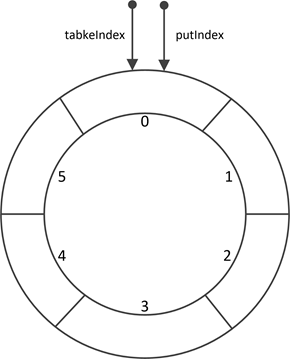

阻塞队列 阻塞队列相对于非阻塞队列最大的区别在于
当队列是空的时，从队列中获取元素的操作将会被阻塞，直到其他的线程往空的队列插入新的元素
当队列是满时，往队列里添加元素的操作会被阻塞，直到队列中移除一个或者多个元素，或者完全清空队列
BlockingQueue简介 BlockingQueue是一个阻塞队列，满足上面阻塞队列的性质，其插入，删除，读取操作方法如下：
抛异常
返回特殊值
阻塞
超时
插入 add(o)
offer(o)
put(o)
offer(o, timeout, timeunit)
移除 remove(o)
poll(o)
take(o)
poll(timeout, timeunit)
检查 element(o)
peek(o)
抛异常：操作无法立即执行，抛出异常
返回特殊值：操作无法立即执行，返回false或null
阻塞：操作无法立即执行，该方法调用将会发生阻塞，直到能够执行。
超时：操作无法立即执行，该方法调用将在给定的时间内发生阻塞，直到能够执行，操作成功返回true；若在给定时间内无法完成操作，返回false
1 2 3 4 5 6 7 8 9 10 11 12 13 14 15 16 17 18 19 20 21 22 23 24 25 26 27 28 29 30 31 32 33 34 35 36 37 38 39 40 41 42 43 44 45 46 47 48 49 50 51 52 53 54 55 56 57 58 59 60 public interface BlockingQueue <E > extends Queue <E > boolean add (E e) boolean offer (E e) void put (E e) throws InterruptedException boolean offer (E e, long timeout, TimeUnit unit) throws InterruptedException ; E take () throws InterruptedException ; E poll (long timeout, TimeUnit unit) throws InterruptedException ;
谨记：BlockingQueue无法插入null
消费者生产者问题 操作系统中，生产者消费者问题，一般定义两个同步信号量和一个互斥信号量
mutex 互斥信号量，表示只有一个线程可以操作队列
empty 同步信号量，表示剩余空间的个数
full 同步信号量，表示已经装满的个数
消费者生产者问题可以自己定义P操作，V操作，然后再利用这三个信号量完成。
下面是一个利用LinkedBlockingQueue，并且空间大小为5的阻塞队列实现的消费者生产者
1 2 3 4 5 6 7 8 9 10 11 12 13 14 15 16 17 18 19 20 21 22 23 24 25 26 27 28 29 30 31 32 33 34 35 36 37 38 39 40 41 42 43 44 45 46 47 48 49 50 51 52 53 54 55 56 57 58 59 60 61 62 63 64 65 66 67 68 69 70 71 72 import java.util.concurrent.LinkedBlockingQueue;import java.util.concurrent.TimeUnit;public class LinkedBlockingQueueDemo private final static LinkedBlockingQueue<Apple> queue= new LinkedBlockingQueue<>(5 ); public static void main (String[] args) new Thread(new Producer(queue)).start(); new Thread(new Producer(queue)).start(); new Thread(new Consumer(queue)).start(); new Thread(new Consumer(queue)).start(); } } class Apple public Apple () } } class Producer implements Runnable private final LinkedBlockingQueue<Apple> queue; Producer(LinkedBlockingQueue<Apple> linkedBlockingQueue){ this .queue = linkedBlockingQueue; } @Override public void run () while (true ) { Produce(); } } private void Produce () try { Apple apple = new Apple(); queue.put(apple); System.out.println("生产:" +apple); } catch (InterruptedException e) { e.printStackTrace(); } } } class Consumer implements Runnable private LinkedBlockingQueue<Apple> queue; Consumer(LinkedBlockingQueue<Apple> linkedBlockingQueue){ this .queue = linkedBlockingQueue; } @Override public void run () while (true ){ try { TimeUnit.MILLISECONDS.sleep(1000 ); comsume(); } catch (InterruptedException e) { e.printStackTrace(); } } } private void comsume () throws InterruptedException Apple apple = queue.take(); System.out.println("消费Apple=" +apple); } }
ArrayBlockingQueue ArrayBlockingQueue是一种有界阻塞队列 ，在初始构造的时候需要指定队列的容量。具有如下特点：
队列的容量一旦在构造时指定，后续不能改变；
插入元素时，在队尾进行；删除元素时，在队首进行；
队列满时，调用特定方法插入元素会阻塞线程；队列空时，删除元素也会阻塞线程；
支持公平/非公平策略，默认为非公平策略。
ArraBlockingQueue是使用环形数组实现
当元素个数等于队列长度时表示队列已满
当元素个数等于0表示队列为空
所有线程共用一把锁
参数 所有线程共同使用同一个重入锁
1 2 3 4 5 6 7 8 9 10 11 12 13 14 15 16 17 18 19 20 21 22 23 24 25 final Object[] items;int takeIndex;int putIndex;int count;final ReentrantLock lock;private final Condition notEmpty;private final Condition notFull;transient Itrs itrs = null ;
构造函数 ArrayBlockingQueue有三个构造函数
1 2 3 4 5 6 public ArrayBlockingQueue(int capacity) { this (capacity, false ); }
1 2 3 4 5 6 7 8 9 10 11 12 13 public ArrayBlockingQueue (int capacity, boolean fair) if (capacity <= 0 ) throw new IllegalArgumentException(); this .items = new Object[capacity]; lock = new ReentrantLock(fair); notEmpty = lock.newCondition(); notFull = lock.newCondition(); }
1 2 3 4 5 6 7 8 9 10 11 12 13 14 15 16 17 18 19 20 21 22 23 24 25 public ArrayBlockingQueue (int capacity, boolean fair, Collection<? extends E> c) this (capacity, fair); final ReentrantLock lock = this .lock; lock.lock(); try { int i = 0 ; try { for (E e : c) { checkNotNull(e); items[i++] = e; } } catch (ArrayIndexOutOfBoundsException ex) { throw new IllegalArgumentException(); } count = i; putIndex = (i == capacity) ? 0 : i; } finally { lock.unlock(); } }
核心构造方法 ArrayBlockingQueue(int capacity, boolean fair) 默认的是非公平锁
注意：一般情况下，使用公平策略的程序在多线程访问时，总体吞吐量（即速度很慢，常常极其慢）比较低，因为此时一定需要暂停线程并启动线程。
构造完之后，ArrayBlockingQueue的初始化结构如下

插入元素之后，ArrayBlockingQueue的结构如下
尾部插入 1 2 3 4 5 6 7 8 9 10 11 12 13 14 15 16 17 18 19 20 21 22 23 24 25 26 27 28 29 30 31 32 33 34 35 36 37 38 39 40 41 42 43 44 45 46 47 48 49 50 51 52 53 54 55 56 57 58 59 60 61 62 63 64 65 66 67 68 69 70 71 public boolean add (E e) if (offer(e)) return true ; else throw new IllegalStateException("Queue full" ); } public boolean offer (E e) checkNotNull(e); final ReentrantLock lock = this .lock; lock.lock(); try { if (count == items.length) return false ; else { enqueue(e); return true ; } } finally { lock.unlock(); } } public void put (E e) throws InterruptedException checkNotNull(e); final ReentrantLock lock = this .lock; lock.lockInterruptibly(); try { while (count == items.length) notFull.await(); enqueue(e); } finally { lock.unlock(); } } public boolean offer (E e, long timeout, TimeUnit unit) throws InterruptedException { checkNotNull(e); long nanos = unit.toNanos(timeout); final ReentrantLock lock = this .lock; lock.lockInterruptibly(); try { while (count == items.length) { if (nanos <= 0 ) return false ; nanos = notFull.awaitNanos(nanos); } enqueue(e); return true ; } finally { lock.unlock(); } } private void enqueue (E x) final Object[] items = this .items; items[putIndex] = x; if (++putIndex == items.length) putIndex = 0 ; count++; notEmpty.signal(); }
头部删除 1 2 3 4 5 6 7 8 9 10 11 12 13 14 15 16 17 18 19 20 21 22 23 24 25 26 27 28 29 30 31 32 33 34 35 36 37 38 39 40 41 42 43 44 45 46 47 48 49 50 51 52 public E poll () final ReentrantLock lock = this .lock; lock.lock(); try { return (count == 0 ) ? null : dequeue(); } finally { lock.unlock(); } } public E take () throws InterruptedException final ReentrantLock lock = this .lock; lock.lockInterruptibly(); try { while (count == 0 ) notEmpty.await(); return dequeue(); } finally { lock.unlock(); } } public E poll (long timeout, TimeUnit unit) throws InterruptedException long nanos = unit.toNanos(timeout); final ReentrantLock lock = this .lock; lock.lockInterruptibly(); try { while (count == 0 ) { if (nanos <= 0 ) return null ; nanos = notEmpty.awaitNanos(nanos); } return dequeue(); } finally { lock.unlock(); } } private E dequeue () final Object[] items = this .items; E x = (E) items[takeIndex]; items[takeIndex] = null ; if (++takeIndex == items.length) takeIndex = 0 ; count--; if (itrs != null ) itrs.elementDequeued(); notFull.signal(); return x; }
LinkedBlockingQueue LinkedBlockingQueue是一种近似有界阻塞队列 ，因为LinkedBlockingQueue既可以在初始构造时就指定队列的容量，也可以不指定，如果不指定，那么它的容量大小默认为Integer.MAX_VALUE。
插入元素时，在队尾进行；删除元素时，在队首进行；
队列满时，调用特定方法插入元素会阻塞线程；队列空时，删除元素也会阻塞线程；
底层数据结构为链表
维护两把锁takeLock和putLock，可以使删除和插入操作互不干扰
takeLock用于控制出队的并发，只能有一个线程进行删除操作
putLock用于入队的并发，只能有一个线程进行插入操作
所有的元素都被封装成Node类型的节点插入到队列中
参数 1 2 3 4 5 6 7 8 9 10 11 12 13 14 15 16 17 18 19 20 21 22 23 24 25 26 27 28 29 30 31 32 33 34 static class Node <E > E item; Node<E> next; Node(E x) { item = x; } } private final int capacity;private final AtomicInteger count = new AtomicInteger();transient Node<E> head;private transient Node<E> last;private final ReentrantLock takeLock = new ReentrantLock();private final Condition notEmpty = takeLock.newCondition();private final ReentrantLock putLock = new ReentrantLock();private final Condition notFull = putLock.newCondition();
构造函数 1 2 3 4 5 6 7 public LinkedBlockingQueue () this (Integer.MAX_VALUE); }
1 2 3 4 5 6 7 8 public LinkedBlockingQueue (int capacity) if (capacity <= 0 ) throw new IllegalArgumentException(); this .capacity = capacity; last = head = new Node<E>(null ); }
1 2 3 4 5 6 7 8 9 10 11 12 13 14 15 16 17 18 19 20 21 22 23 public LinkedBlockingQueue (Collection<? extends E> c) this (Integer.MAX_VALUE); final ReentrantLock putLock = this .putLock; putLock.lock(); try { int n = 0 ; for (E e : c) { if (e == null ) throw new NullPointerException(); if (n == capacity) throw new IllegalStateException("Queue full" ); enqueue(new Node<E>(e)); ++n; } count.set(n); } finally { putLock.unlock(); } }
构造完之后，LinkedBlockingQueue的初始化结构如下
插入元素之后，LinkedBlockingQueue的结构如下
尾部插入 1 2 3 4 5 6 7 8 9 10 11 12 13 14 15 16 17 18 19 20 21 22 23 24 25 26 27 28 29 30 31 32 33 34 35 36 37 38 39 40 41 42 43 44 45 46 47 48 49 50 51 52 53 54 55 56 57 58 59 60 61 62 63 64 65 66 67 68 69 70 71 72 73 74 75 76 77 78 79 80 public boolean offer (E e) if (e == null ) throw new NullPointerException(); final AtomicInteger count = this .count; if (count.get() == capacity) return false ; int c = -1 ; Node<E> node = new Node<E>(e); final ReentrantLock putLock = this .putLock; putLock.lock(); try { if (count.get() < capacity) { enqueue(node); c = count.getAndIncrement(); if (c + 1 < capacity) notFull.signal(); } } finally { putLock.unlock(); } if (c == 0 ) signalNotEmpty(); return c >= 0 ; } public void put (E e) throws InterruptedException if (e == null ) throw new NullPointerException(); int c = -1 ; Node<E> node = new Node<E>(e); final ReentrantLock putLock = this .putLock; final AtomicInteger count = this .count; putLock.lockInterruptibly(); try { while (count.get() == capacity) { notFull.await(); } enqueue(node); c = count.getAndIncrement(); if (c + 1 < capacity) notFull.signal(); } finally { putLock.unlock(); } if (c == 0 ) signalNotEmpty(); } public boolean offer (E e, long timeout, TimeUnit unit) throws InterruptedException { if (e == null ) throw new NullPointerException(); long nanos = unit.toNanos(timeout); int c = -1 ; final ReentrantLock putLock = this .putLock; final AtomicInteger count = this .count; putLock.lockInterruptibly(); try { while (count.get() == capacity) { if (nanos <= 0 ) return false ; nanos = notFull.awaitNanos(nanos); } enqueue(new Node<E>(e)); c = count.getAndIncrement(); if (c + 1 < capacity) notFull.signal(); } finally { putLock.unlock(); } if (c == 0 ) signalNotEmpty(); return true ; } private void enqueue (Node<E> node) last = last.next = node; }
头部删除 1 2 3 4 5 6 7 8 9 10 11 12 13 14 15 16 17 18 19 20 21 22 23 24 25 26 27 28 29 30 31 32 33 34 35 36 37 38 39 40 41 42 43 44 45 46 47 48 49 50 51 52 53 54 55 56 57 58 59 60 61 62 63 64 65 66 67 68 69 70 71 72 73 74 75 76 77 78 79 80 81 public E poll () final AtomicInteger count = this .count; if (count.get() == 0 ) return null ; E x = null ; int c = -1 ; final ReentrantLock takeLock = this .takeLock; takeLock.lock(); try { if (count.get() > 0 ) { x = dequeue(); c = count.getAndDecrement(); if (c > 1 ) notEmpty.signal(); } } finally { takeLock.unlock(); } if (c == capacity) signalNotFull(); } public E take () throws InterruptedException E x; int c = -1 ; final AtomicInteger count = this .count; final ReentrantLock takeLock = this .takeLock; takeLock.lockInterruptibly(); try { while (count.get() == 0 ) { notEmpty.await(); } x = dequeue(); c = count.getAndDecrement(); if (c > 1 ) notEmpty.signal(); } finally { takeLock.unlock(); } if (c == capacity) signalNotFull(); return x; } public E poll (long timeout, TimeUnit unit) throws InterruptedException E x = null ; int c = -1 ; long nanos = unit.toNanos(timeout); final AtomicInteger count = this .count; final ReentrantLock takeLock = this .takeLock; takeLock.lockInterruptibly(); try { while (count.get() == 0 ) { if (nanos <= 0 ) return null ; nanos = notEmpty.awaitNanos(nanos); } x = dequeue(); c = count.getAndDecrement(); if (c > 1 ) notEmpty.signal(); } finally { takeLock.unlock(); } if (c == capacity) signalNotFull(); return x; } private E dequeue () Node<E> h = head; Node<E> first = h.next; h.next = h; head = first; E x = first.item; first.item = null ; return x; }
ArrayBlockingQueue与LinkedBlockingQueue对比
ArrayBlockingQueue
LinkedBlockingQueue
底部数据结构
环形数组，存储元素
链表，封装成Node插入
锁
只有一个lock，插入删除只能一个进行
takeLock和putLock两个锁，插入删除可同时进行，效率会更高一些
队列大小
必须指定大小
可不指定大小默认为Integer.MAX_VALUE，可指定大小
插入唤醒
插入数据后直接唤醒删除线程
插入数据后如果还有空间唤醒后续插入线程；插入之前为空队列再唤醒删除线程
删除唤醒
删除数据后直接唤醒插入线程
删除数据后如果还有数据唤醒后续删除线程；删除之前为满队列再唤醒插入线程
参考 https://blog.csdn.net/javazejian/article/details/77410889
https://segmentfault.com/a/1190000016296278
https://blog.yeskery.com/articles/338891277